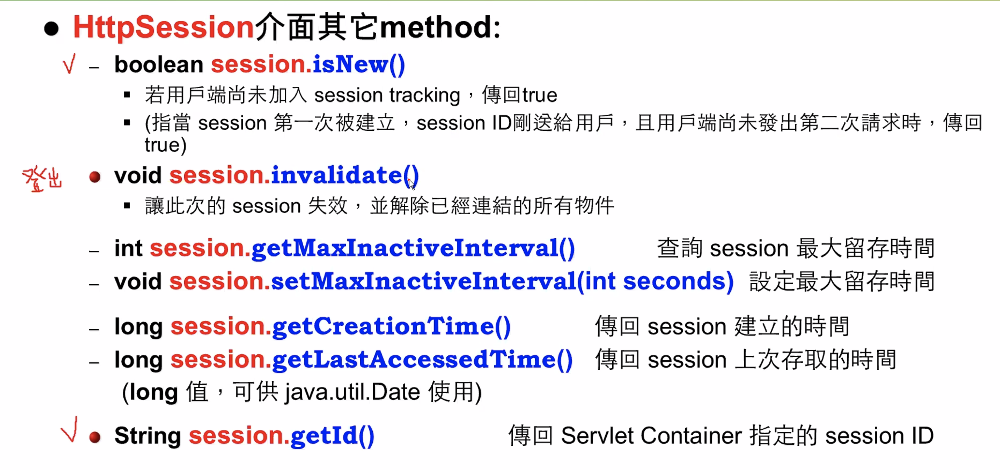

Session機制
什麼是Session
- 是一種紀錄用戶端狀態的機制
- 儲存在伺服器上
- Session相當於程式在伺服器上建立的一份客戶檔案，客戶來訪時只需查詢客戶檔案表即能追蹤
實現使用者登入
- 對應的類別為javax.servlet.http.HttpSession類別
- 每個來訪者對應一個Session物件，所有該客戶的狀態資訊都儲存在這個Session物件裡
- Session物件在用戶端第一次請求伺服器時建立
- Session是一種key-value屬性對，透過
getAttribute(String key)及setAttribute(String key, Object value)方法讀寫客戶狀態資訊 - 透過
request.getSession()獲得該客戶的Session，如：
// 獲得Session物件
HttpSession session = request.getSession();
// 設定Session中的屬性
session.setAttribute("loginTime", new Date());
// 獲得Session屬性
out.println("登入時間為：" + (Date)session.getAttribute("loginTime"));
HttpSession介面之屬性(Attribute)方法
void session.setAttribute(String name, Object value)
將指定的物件存入session中
Object session.getAttribute(String name)
從session中取出物件
void session.removeAttribute(String name)
從session中移除物件
Enumeration session.getAttributeNames()
將目前session中的所有屬性名稱以Enumeration型態傳回
程式片段(取得session擁有之所有屬性名稱、值)
Enumeration en = session.getAttributeNames();
while (en.hasMoreElements()){
String name = (String) en.nextElement();
out.println(name + ":" + session.getAttribute(name));
}
HttpSession介面其他方法
